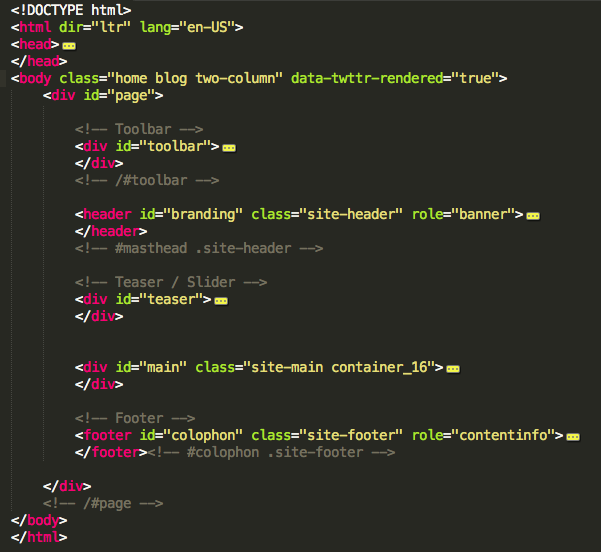

Thank you for purchasing my file – your choice is greatly appreciated.
This theme is a fluid layout with two columns and It is built on a responsive framework.
Below is a file structure:
The HTML page structure:

The main container is #page
#toolbar - Toolbar of the template
#branding - Site header it contains Logo and Main menu
#teaser - Flexslider goes here
#main - the main content goes here. For home page here will be 5 widget areas and for the rest pages will be 2 columns.
<div id="primary" class="grid_11 suffix_1"> - For left column
<div id="secondary" class="grid_4 widget-area" role="complementary"> - Right Column
#colophan - The footer of the site. It contains 4 widget area and the copyright of the site.
Here you will find the path to the all css fiels.
- css (folder)
- - font (folder)
- - flexslider.css
- - font-awesome-ie7.min.css
- - font-awesome.min.css
- - grid.css
- - keyframes.css
- style.css
flexslider.css - All styles wich belongs to FlexSlider.
font-awesome-ie7.min.css - Awesom fonts for Ie7
font-awesome.min.css - Awesome fonts.
grid.css - The css framework.
keyframes.css - Custom Animations keyframes
style.css - This file contain all custom styles. At the bottom of the page you will find the Responsive Structure.
Here you will find the path to the all JavaScripts fiels.
I've included 11 psds with this theme:
Google Webfonts:
Archivo Narrow http://www.google.com/fonts/specimen/Archivo+Narrow
Arimo http://www.google.com/fonts/specimen/Arimo
http://www.woothemes.com/flexslider/
Once again, thank you so much for purchasing this theme. As I said at the beginning, I'd be glad to help you if you have any questions relating to this theme. No guarantees, but I'll do my best to assist. If you have a more general question relating to the themes on ThemeForest, you might consider visiting the forums and asking your question in the "Item Discussion" section.
Victor Tihai